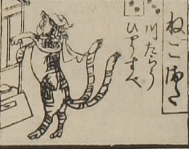

猫又；ネコマタ，猫；ネコ

猫又。縞模様の入った猫が後足で立っている。頭に布をかぶっており、尾は2本に分かれている。奥に行灯のようなものがある。
出典：親書誌：U426_nichibunken_0082：新版妖怪飛巡雙六；シンパンヨウカイトビマハリスゴロク／日付：2007／資源識別子：U426_nichibunken_0082_0005_0000
Copyright (c)2010- International Research Center for Japanese Studies, Kyoto, Japan. All rights reserved.